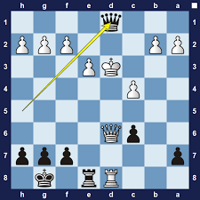
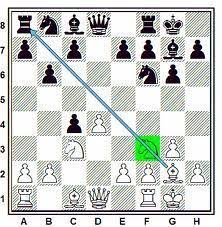

Advanced Tactics: X-Ray and Discovered Attack
X-Ray and Discovered Attack are two advanced tactics in chess that involve using one piece to attack another piece indirectly, by "seeing through" a blocking piece.
X-Ray Attack
X-Ray Attack is a tactic where a piece attacks a piece that is behind another piece. The attacking piece can "see through" the piece in front of it, as long as the piece in front is of the same color as the attacking piece. This is often used to attack the opponent's queen, as the queen is a powerful piece that is often well-protected by other pieces.
Here is an example of an X-Ray Attack:
Discovered Attack
Discovered Attack is a tactic where one piece moves out of the way, revealing an attack by another piece behind it. The revealed attack can be against the opponent's king, queen, or any other valuable piece.
Here is an example of a Discovered Attack:
